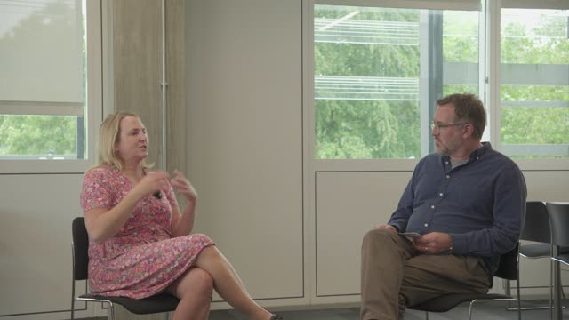

Dr Steph Ainsworth — Teacher Resilience
Click a part — each has the video with a clickable, timestamped transcript that follows as it plays.

▶
15:26
Interview
So I'm talking to Dr. Steph Ainsworth today. Hi Steph, nice to see you.…
Tip: click a blue time pill to jump the video, or use "Full transcript" to read & copy the whole thing.